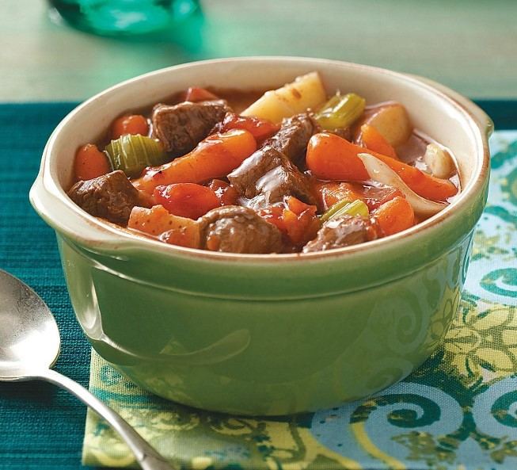

Beef Stew

This is an old family recipe I got from my grandmother who lived through two world wars,
and she swore this recipe got her her husband. We have it every week, and my kids take
the leftovers to school, and their friends love it, and their grandparents swore they had
the same stew before.
Ingredients
- 1 kg full fat beef
- 1 can tomato soup
- 1 clove garlic
- 1 cup diced shallots
- 1 cup red wine
Steps
- Heat a tablespoon of olive oil in a crockpot until it just begins to smoke.
- Brown the beef piece or pieces on all sides. It's ok if it gets a bit overcooked at this stage, but try not to.
- Remove the beef to a plate to rest. Add the shallots and garlic, and saute for a few minutes.
- Once the onions are browned, add a dash of wine to the pot to deglaze. Use a spatula to lift the fond; this is the brown bits stuck to the bottom of the pot.
- Put the resting beef back into the pot, including any juices, and add in the tomato soup and the rest of the wine.
- Bring the heat up to a boil for a few seconds, then down to a simmer. Cover the pot, and let it simmer for three hours.
- Also, throw in some thyme and a bay leaf if that's your thing. Some people like it.